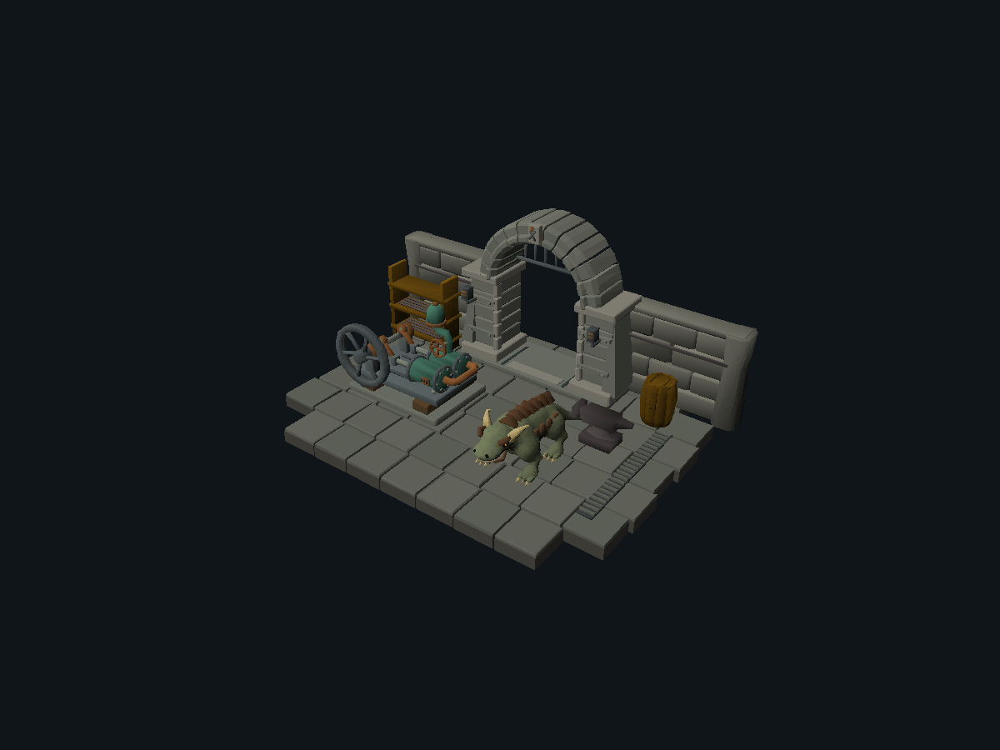
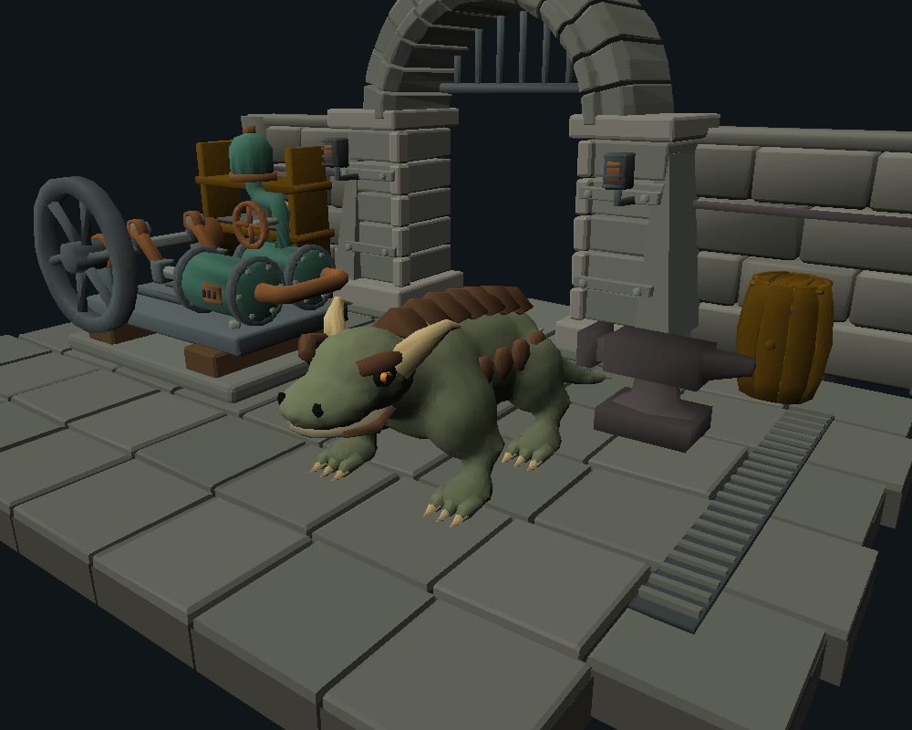
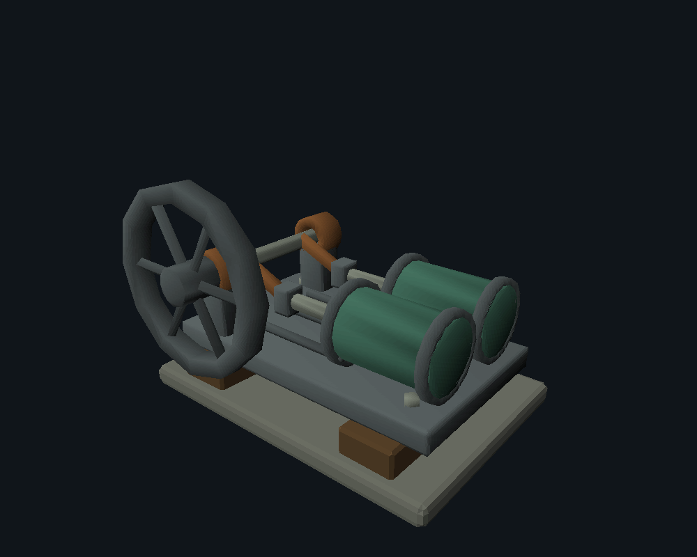
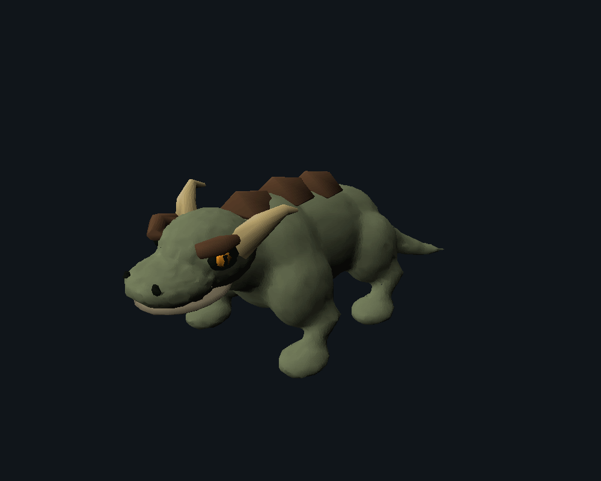
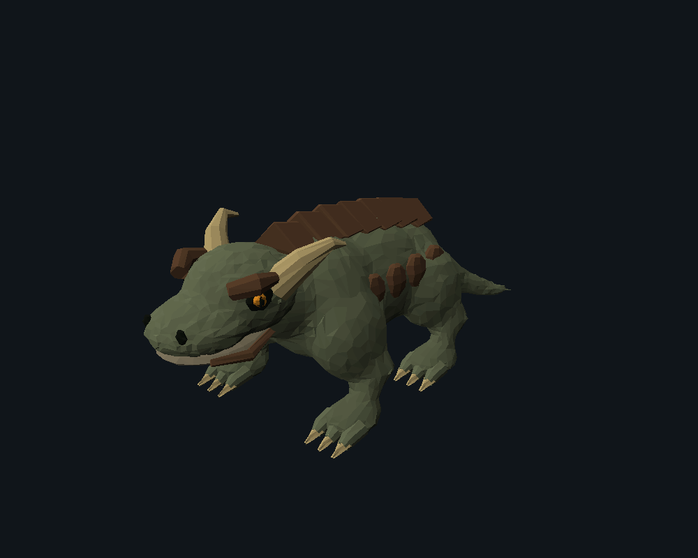

ASCENT / ORIGINAL ASSET PRODUCTION / CONTROLLED LOCAL STUDY
Better meshes.
A visible, bounded improvement.
A molded foundry entrance, twin-cylinder pump and horned ash drake, authored with evaluated Blender meshes and reviewed through the unchanged Rust renderer.
This is an improvement study, not an assertion that the final art standard has been reached. The architecture and machine benefit from deliberate construction. The creature remains the weakest asset: its contours are continuous, but the torso and scute transitions still need an artist’s refinement. Nothing has been integrated into the live game.
The pump yard
Native scene submission, ambient 64 / contrast 768, fixed light [-30, -50, -30]. The anvil at right is authentic Jagex object 2097, loaded privately from the local revision 239.1 cache. All other geometry is original, including retained earlier wall, barrel and rack assets. No original cache mesh is in this package.

Whole-scene overview · native 1200 × 900
Close native composition · no Blender lighting or image-generation enhancementThree original assets
01 · Ember-lock entrance
Thirteen voussoirs form a deep molded arch. Stepped jambs, buttresses, iron reinforcement, a tongs-and-ember keystone, louvers and a raised crown grate give the structure a purpose.
First pass: uniform stone, plain opening, weak focal point. Refinement: molded reveal and buttresses, restrained stone batches, keystone and hardware. Remaining: rear faces are simpler; wear is restrained rather than richly hand-painted.
Front, side, rear and ordinary gameplay views; editable source
Editable Blender source · Converted model · Conversion audit
02 · Twin-cylinder foundry pump
A shared crankshaft drives two piston rods. Bearing pedestals, bolted cylinder flanges, an intake manifold, discharge vessel and handwheel establish a readable assembly.
First pass: polygonal wheel, unexplained plumbing, crank rods nearly meeting the axle center. Refinement: swept spokes, clear assembly hierarchy, manifold, valve, pressure vessel and eccentric crank pins. Remaining: static assembly only; no mechanical simulation, animated cycle or engineering certification.

First pass · matched camera Refined mesh · matched camera
Refined mesh · matched cameraFront, side, rear and ordinary gameplay views; editable source
Editable Blender source · Converted model · Conversion audit
03 · Cindermaw ash drake
A low-bodied quadruped with a heavy shoulder girdle, swept cheek horns, broad muzzle, jointed digging digits and overlapping dorsal scutes. Original design and geometry.
First pass: overlapping muscle volumes, oversized eyes, blunt feet. Refinement: volume union and contour relaxation, reduced eyes, separate digits and claw tips, more deliberate plate rhythm. Remaining: soft torso anatomy, sparse surface patterning, visible head-neck seam at some angles. Not approved as finished creature art.
Front, side, rear and ordinary gameplay views; editable source
Editable Blender source · Converted model · Conversion audit
Minimal rig compatibility
The mesh retains component groups for the head and jaw. All 61 native pose samples match the existing independent classic-transform evaluator exactly. The GIF covers the complete 60-tick cycle at 40 ms per authored two-tick frame. This proves rigid group compatibility only; no weighted skinning, locomotion, foot-contact or combat-animation claim is made.
Native head/jaw idle · 1.2 seconds · complete loopA controlled change, then artistic refinement
The key controlled pair uses the same input masses, horns, eyes, plates, materials, camera and light. Only volume union, contour relaxation and simplification change. The final model then adds separate design corrections. More triangles alone are not the success criterion.
Separate Blender masses · before union
Same masses · union and topology refinementHybrid result · anatomy, toes, eyes and plates refined Existing procedural workbench comparisons
A fresh quadruped-template control uses the existing workbench and the same broad horned-drake brief. It is a starter template, not the best previous result. The previously refined Sootsnout is therefore also shown under the same camera to avoid comparing only against a weak control. These are design comparisons, not identical-topology experiments.
| Method | Actual test | Finding |
|---|
| Existing primitive workbench | Fresh template; previous best retained | Fast, reproducible structural parts. Weak at continuous anatomy without explicit topology work. |
| Blender mesh authoring | Bevels, radial arch profiles, curved sweeps, named material components | Useful architectural and mechanical improvement; structure remains editable. |
| Volume union + simplification | Same-mass controlled creature pair | Removes intersection seams. Does not independently invent convincing anatomy; can introduce lumps. |
| Hybrid refinement | Revised eyes, digits, plate rhythm, silhouette and mechanism | Strongest tested local workflow. Requires repeated native inspection. |
| Specialized AI-to-3D | Access, hardware and terms evaluated; no inference calls | Untested geometry quality. No claim that paid generation would improve these results. |
What conversion preserves—and loses
The new adapter exports evaluated Blender meshes into the existing native codec. It preserves component transforms, material regions, native group labels and chosen flat/interpolated shading. Source meshes retain UVs and full coordinate precision. Only the exported copy is rounded to the native integer lattice.
| Final asset | Vertices | Triangles | Collapsed triangles removed |
|---|
| Architecture | 3,166 | 5,688 | 320 |
| Machine | 2,600 | 4,817 | 83 |
| Creature | 4,955 | 9,520 | 166 |
Maximum coordinate rounding: 0.5 native units per axis (128 units per tile). Tiny bevel and claw triangles sometimes collapse; counts above are explicit loss, not a quality score. Zero-area triangles are excluded. Budgets remain below 12,000 vertices / 20,000 triangles per asset, but these are study caps, not established production budgets. The unchanged codec also enforces section-size and signed-index limits.
Original UV albedo experiment
The same four-color authored pattern is tested three ways. A diffuse-only material loses it. Baking onto two triangles retains only two samples. Subdividing to 512 triangles preserves the broad pattern through native face colors. This is a bounded approximation, not preservation of arbitrary texture UVs.
Original authored image · Editable UV test source. The adapter samples a single albedo image at triangle UV centroids and converts RGB to native HSL. Full shader graphs, UV transforms, linear/display color-space interchange, PBR roughness, metallic and normal maps are not implemented. Native simple cache-texture mappings already exist in the codec; this study does not install new textures or alter the authoritative renderer.

Same final mesh · flat native shadingSame final mesh · interpolated native shadingThe identical geometry becomes visibly noisy with flat shading. Native interpolation materially helps, but the residual contour problems remain. All showcase faces use priority 0 and alpha 0; transparent materials were not tested. Winding is recalculated before export and the coordinate conversion preserves orientation. All four viewing directions are published.
A native scene failure and its geometry fix
A broad ground top face drew over pavers at the player angle. Replacing it with local foundation skirt cells removes the broad overlapping face and follows the paved outline. The paired images below retain the original camera. No renderer sorting rule was changed.
External generation: investigated, not adopted
No Meshy, Tripo or Hunyuan connector is exposed, and no provider credential variable was present. No accounts, purchases, uploads or generation requests were made. Protected OSRS inputs stayed local. Prices below are documented API credits, not an inferred dollar conversion.
| Provider | Access, quoted cost and constraints | Data / license decision |
|---|
| Meshy | Paid-plan API key and prepaid credits. Current 7.1 image/multiview: 20 credits mesh-only, 30 with 2K textures; text preview and texture refine billed separately. Offers remesh and rigging; generated topology and native conversion remain untested. Pricing | Paid users own output subject to law; free output is CC BY 4.0. Terms permit non-enterprise training unless separately agreed. API output retention is three days outside Enterprise. No adoption without an authorized account and acceptable terms. Terms |
| Tripo | Authenticated prepaid API. H2/H3 image or multiview: 20 credits mesh-only / 30 textured; P1: 40 / 50. Segmentation, low-poly and rig checks exist; extras may add credits. No model was generated. Pricing | Paid-user terms grant input/output rights and exclude training use; free-user rights differ materially. Service-use license still applies. Recommend only a bounded paid evaluation after authorization, not automatic adoption. Terms §5.2 |
| Hunyuan3D 2.1 | Local shape inference documents 10 GB VRAM, texture 21 GB, combined 29 GB. This GTX 1660 Ti has 6 GB. The documented configuration is not supported here; no large weights downloaded. An offloaded variant would require a separate measured trial and may be slow. | Community license, not a permissive blanket license: territory excludes EU, UK and South Korea; large-scale use has additional terms. Local inference avoids provider upload, but deployment/output restrictions matter. License |
Dominant bottleneck and recommended workflow
For these tested assets, design and geometry refinement dominate. The same native renderer and material palette render a coherent molded arch, mechanism and smoother creature after mesh-level changes. The controlled union pair removes seams without a renderer change; the creature’s remaining weak anatomy survives both shading modes. That evidence does not support blaming the renderer alone.
Material loss is a separate, demonstrated bottleneck for texture-dependent assets. The UV experiment shows exactly why a textured cloud model could still look poor after conversion. Specialized generation remains an untested hypothesis, not the established solution.
- Plan silhouette, component relationships and focal details from multiple views before adding density.
- Use precise Blender meshes for architecture and machinery; reserve volume union for continuous organic forms.
- Refine the editable mesh, then simplify by curvature. Keep horns, claws, eyes and mechanical interfaces as named components.
- Author material regions for native HSL. Use bounded UV-to-face-color baking where the geometry budget supports it; do not rely on unsupported PBR effects.
- Render front, side, rear, quarter and player views with fixed native cameras. Revise the three largest visual weaknesses.
- Only after static approval, assign classic groups and validate a minimal motion proof. Broader locomotion is a separate task.
Measured cost/time: $0 in external provider charges. Final Blender build/export took approximately 3–4 seconds per asset on this machine; each five-view native render batch took a few seconds. These measurements exclude prompt work, modeling decisions and inspection, which were shared across assets and not timed per model. Token and electricity costs were not measured.
Technical failures retained: an initial relative image-save path failed and was fixed to an absolute path; Blender desktop-thumbnail writes were denied while source saves succeeded; coarse UV baking lost detail; the scene’s broad slab produced painter-order artifacts. None is hidden by a beauty render.
Conclusion: adopt the evaluated-mesh and native-review workflow for the next art iteration. It produces a visible local improvement, but this study does not establish three production-ready assets. The user retains artistic approval. A paid AI-to-3D trial would still need to prove superior geometry after this same conversion and review process.
Manifest and mesh statistics · Reproduction instructions · File hashes · Reusable Blender mesh tools · Original source designs